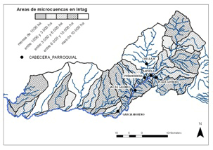

LOS RÍOS INTEÑOS TIENEN SEGUIMIENTO
HIDROÍNTAG ESTUDIA
LOS RECURSOS HÍCRICOS
En Intag existen escasos datos de calidad o caudales de los ríos. La mayoría ha sido producida por investigaciones por parte de empresas ajenas con el fin de aprovechar los recursos (proyectos de hidroelectricidad o de minería) o por extranjeros en la elaboración de investigaciones para sus propios fines, generalmente académicos. Como consecuencia, la escasa información disponible está en todas partes y en ninguna. La misión francesa, que está por el año 2011, tiene como uno de sus objetivos establecer un plan de seguimiento de las cuencas, es decir, seguir la evolución de la cantidad y la calidad de los ríos y del clima. A continuación, ofrecemos a los lectores información general sobre las cuencas, la importancia de su seguimiento y el planteamiento de la HidroÍntag en cuanto a este tema.
¿Qué significa la frase ‘cuenca hídrica’?
Una cuenca se define como el área de drenaje de un río. Por ejemplo, la cuenca del Toabunchi –que, debido a su extensión reducida, se define como una ‘micro cuenca’– forma parte de la cuenca más grande del río Íntag que, por su parte, está incluida en la cuenca del río Guayllabamba que desemboca en el océano. Cada río tiene cuenca propia que puede extenderse desde las mil hectáreas de las más pequeñas, como el río Gualoto o el río Pitura, hasta las 15 000 y más hectáreas de las grandes, por ejemplo, el Magdalena con 15 000 hectáreas, o el Cristopamba con 19 600.
Las cuencas de los afluentes de los ríos Íntag y Guayllabamba; se puede apreciar sus tamaños respetivos.
Cada cuenca tiene características propias, como pendiente, altura, cobertura vegetal y uso de los suelos (cultivos, potreros, bosques, etcétera). Estas características determinen el funcionamiento hídrico de la cuenca, es decir, cómo se traslada y transforma el agua de la lluvia para formar los ríos.
Así, aparte de los cambios climáticos, cada cambio de uso de los suelos (tierra de cultivos transformada en pastos, bosques en cultivos, pastos en pueblo…) o actividad tendrá efectos en la calidad y/o la cantidad del agua disponible. Por ejemplo, si se deforesta, el agua de la lluvia no tiene más árboles para retenerla y tiende a fluir más rápidamente hacia los ríos. Esto agrava las crecidas y la erosión de los suelos.
Representación teórica de cómo cambia el caudal en un río como consecuencia de la lluvia: en la cuenca deforestada, el nivel de los ríos crece más rápidamente, y la crecida es más alta y dura menos; en cambio, en la cuenca sin deforestación, la crecida no es tan pronunciada, viene después y dura más.
Otro ejemplo, si se usan químicos para los cultivos, llegan al agua o a los sedimentos de los ríos de la cuenca.
En qué consiste el seguimiento
El monitoreo de las cuencas implica dos cosas: por un lado, registrar los datos climáticos con una estación meteorológica permanente (el viento, la lluvia, la temperatura y así por el estilo) y, por otro, conocer los ríos.
Monitorear los ríos nos permite conocer a lo largo del año la variación y la evolución de:
El observador de la comunidad de Cielo Verde viene dos veces por día a leer la regla y anotar el nivel del Manduriaco Grande. Esto permite conocer las variaciones de los niveles de agua, datos esenciales para determinar el caudal del río.
Para qué sirve el seguimiento de las cuencas
Los datos de seguimiento pueden servir para:
Así, mantener un monitoreo, que implica la construcción y permanente actualización de una base de datos común, permite no perder información y ponerla a la disposición de todo el mundo: agricultores, organizaciones, autoridades, investigadores, moradores en general. Por medio de esto, esperamos lograr una visión global de los recursos hídricos en la zona, identificando posibles problemas o debilidades (sequía, mala calidad) y soluciones.
Por lo tanto, el monitoreo de la zona significa tener una herramienta imprescindible de control y vigilancia para el desarrollo de Íntag.
Dónde estamos y cuáles son las perspectivas
Desde 2009, los observadores de la red técnica de HidroÍntag están monitoreando los niveles de cinco ríos de la Zona con el fin de transformar los datos de niveles en datos de caudales. Los ríos son:Nalgulví, Toabunche, Manduriaco Grande, Chalguayaco y Pamplona.
La evolución del río Pamplona aguas arriba de la confluencia con el Íntag, desde 2009. Cada línea corresponde al nivel de agua en la regla durante un año entero, empezando en septiembre. Así podemos conocer las variaciones de las crecientes y estiajes de un año al otro. Se ve, por ejemplo, que el nivel mínimo alcanzado en el transcurso de tres años fue en octubre de 2010.
A partir de julio de este año, se medirán los caudales de estos cinco ríos con frecuencia a lo largo del año. El 30 de junio y el 1 de julio, se reunirán las personas involucradas en el seguimiento de los niveles y caudales para presentarles los primeros resultados y establecer métodos de trabajo común.
El seguimiento de la calidad del agua todavía está pendiente. Según la demanda y el costo de la inversión, se dará prioridad a ciertos parámetros. No obstante, en vista del interés que existe entre los inteños, HidroÍntag considera el monitoreo de la calidad una prioridad y lo iniciará lo más pronto posible.
Una base de datos geográficos común se establecerá en las próximas semanas. Incluirá los datos disponibles (recorrido de los ríos, carreteras, red de electricidad, sistema de abastecimiento de agua potable, reservas hídricas, límites de cuencas, resultados del seguimiento, etcétera). Servirá como fuente de información para todas las personas y entidades gubernamentales y no gubernamentales interesadas. Para poder usar la base de datos y para preparar mapas, se requieren conocimientos del Sistema de Información Geográfico (SIG). HidroÍntag ofrecerá capacitación en el tema a partir del 16 de agosto, en Peñaherrera. De acuerdo al cupo, están invitados las juntas parroquiales, organizaciones y personas quienes, por razones de trabajo o investigación, tienen que elaborar mapas de cualquier tipo: de límites de propiedad, ubicación de socios, zonas turísticas, etcétera.
